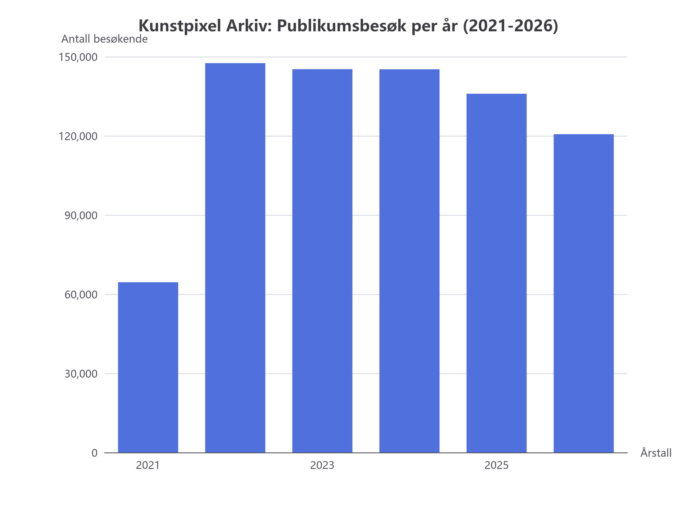

Leksjon 0006 • Kunstpixel & KI i drift
Oppslag i håndbøker, besøkstall og inntektsberegning
Nå treffer vi kjernen av hva ledelsen og gründerne faktisk bryr seg om:
1. Spare tid på regeloppslag i personalhåndbøker.
2. Gjøre presise beregninger av publikumstall og billettinntekter uten synsing.
Dataene ligger allerede i systemet vårt!
I Kunstpixel har vi 50 arkivutstillinger og 16 års historikk liggende klare. Se bare på totalene:
Totalt registrert besøk
1 025 126
Over 1 million gjester
Samlet utstillingsbudsjett
49,2 mill.
NOK i perioden
Ordinær billettpris
120 kr
80 kr for student/honnør

Figur: Ekte historiske besøkstall hentet ut fra Kunstpixels arkiv (2021–2026).
Case 1: Oppslag i håndbøker og reglement (Uten å bla i permer)
I en travel hverdag orker ingen å lete gjennom en 80-siders PDF for å finne ut:
"Hva er reglene for overtid?" eller "Hva koster et familiepass, og har studenter rabatt?"
| Hva lederen / kollegaen spør om |
Hvordan KI løser det med Kunstpixel-data |
Gevinsten |
| "Hva koster et familiepass, og når er det gratis inngang?" |
KI kaller search_faq(query="billett") i databasen og henter fasiten:
• Familiepass: 250 kr.
• Første søndag i måneden: Gratis for alle.
|
Null venting, 100 % korrekt svar på 2 sekunder. |
| "Hva er regelen for alenetid og pauser i kassa?" |
KI kaller lookup_hr_hms_quality_rules(domain="HMS") og siterer nøyaktig gjeldende prosedyre.
|
Slutt på at folk "tror" eller tolker reglene feil. |
Case 2: Beregning av inntekter og publikum (Fasit vs. KI-analyse)
Hvis du spør en vanlig ChatGPT: "Hvor mye tjente vi på billetter i 2024?", vil den finne på et overbevisende tall. Det er livsfarlig for økonomien.
Slik gjør vi det med skikkelig databruk i Kunstpixel:
- Databasen leverer fasiten: I 2024 hadde vi 145 156 besøkende på et budsjett på 7,8 mill. kr.
- Koden regner ut de harde tallene: Hvis 60 % er fullpris (120 kr) og 40 % er rabattert (80 kr), gir det en snittpris på 104 kr → ca. 15,1 millioner kr i brutto billettinntekt.
- KI-en gjør analysen og skjønnet: KI-en sammenstiller dette og forklarer lederen: "Til tross for at budsjettet økte med 2,8 mill. kr i 2024, holdt besøkstallet seg flatt på 145 000. Kostnaden per besøkende gikk opp fra 31 kr til 54 kr. Her bør vi se på markedsføringseffekten."
Dette er grunnen til at ledere kjøper dette:
De vil ikke ha en "chatterobot". De vil ha et system som slår opp fasit i reglementet på sekunder, og som regner ut inntekter og trender uten regnefeil.
Test deg selv: Hvorfor må inntekts- og besøksberegninger gjøres i kode/database før KI-en slipper til?
A: Fordi språkmodeller er laget for å generere tekst og mangler en matematisk regnemotor. Hvis de regner selv, oppstår feilmarginer som kan velte et budsjett.
B: Fordi databaser bruker mindre strøm enn språkmodeller.
← Leksjon 5 (Vertskap & Persona) |
Leksjon 3 (Enkelt forklart)